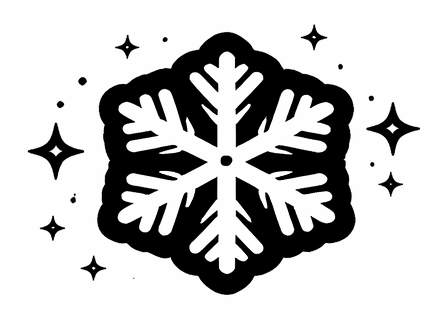

Kártyatípusok
Támadó kártya: csak a Támadó sorba helyezhető.
Távoli kártya: csak a Távoli sorba helyezhető.
Segítő kártya: csak a Segítő sorba helyezhető.
Időjárás kártya: külön helyre játszható ki.
Időjárás kártyák
Nap: semlegesíti a többi időjáráskártyát.
Hóvihar: minden támadó értéke 1 lesz.

Köd: minden távoli értéke 1 lesz.
Eső: minden segítő értéke 1 lesz.
Kiegészítések
- Örökké barátok: ha két ilyen kártya egymás mellett van, az értékeik megduplázódnak.
- Törhetetlen: ez a kiegészítés ignorálja az időjárás kártyákat.
- Szakértő: bármelyik sorra letehető.
Kártyák összesen
- Támadó: 20 db, ebből 6 Örökké barátok és 2 Törhetetlen kiegészítéssel.
- Távoli: 20 db, ebből 6 Örökké barátok és 2 Törhetetlen kiegészítéssel.
- Segítő: 20 db, ebből 6 Örökké barátok és 2 Törhetetlen kiegészítéssel.
- Időjárás: 12 db, 4 fajta, mindegyikből 3-3 darab.